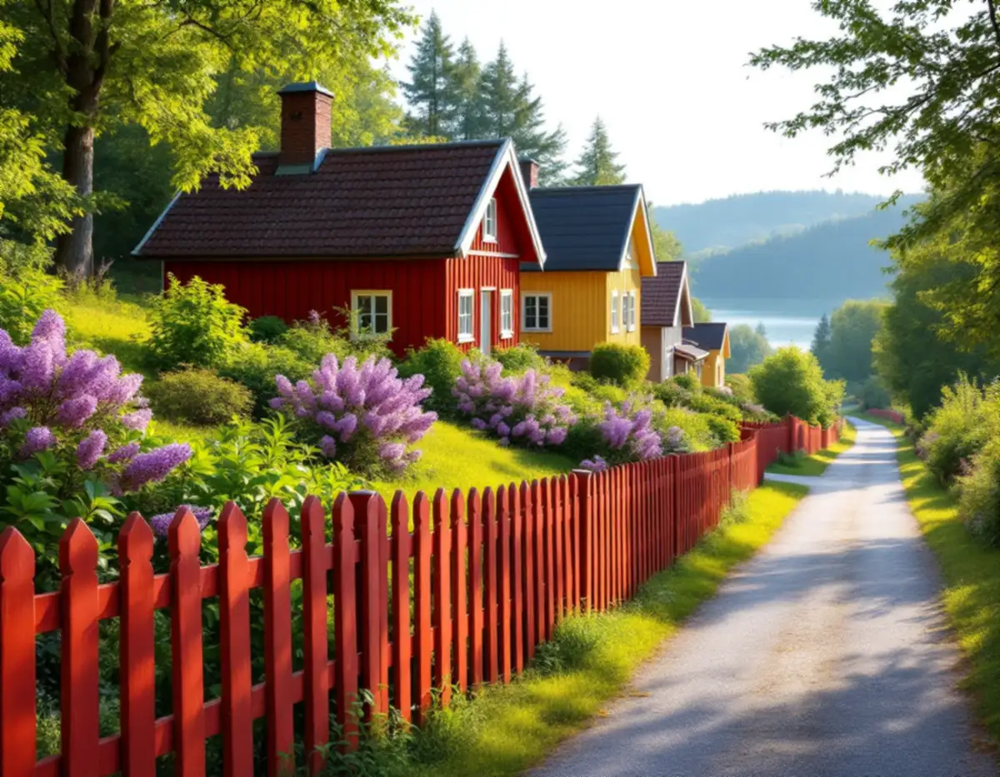
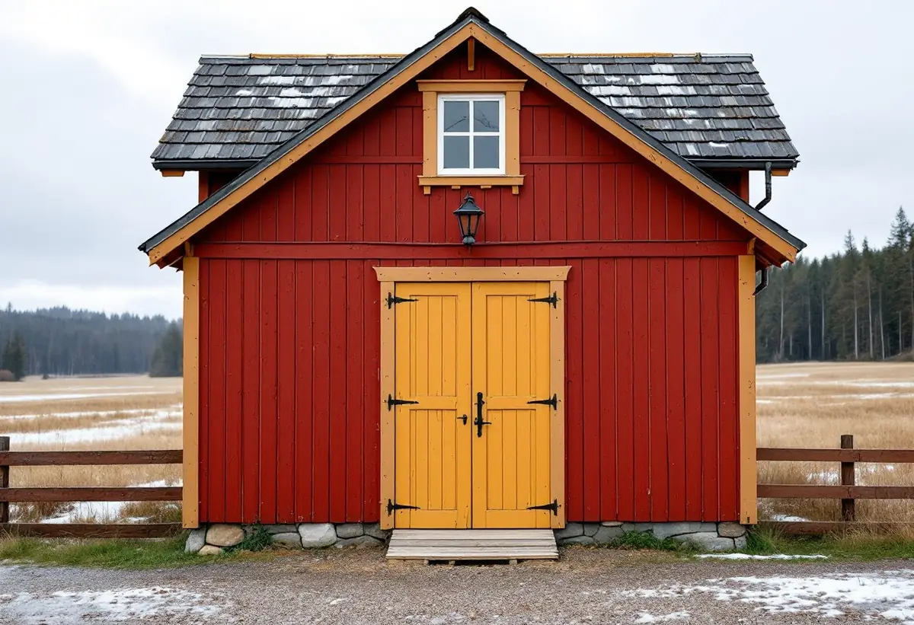

Platsbesök
Vi tittar på staket, dörrar, trappor och uthus och mäter upp lutning och gränser.
I Sigtuna stad följer planken och spjälstaketen gränderna ner mot Mälaren, och i dalgången mellan Odensala och Hova står små uthus kvar från månghussystemets tid. Båda miljöerna har kommunala riktlinjer som berör snickerierna. Geal Entreprenad AB bygger och lagar staket, plank, dörrar, trappor och uthus i Sigtuna stad, Märsta och övriga kommunen, med gratis platsbesök och skriftligt kostnadsförslag.

Bevarande- och förnyelseplanen för Sigtuna stad, antagen 2019, beskriver gränderna som 2–4 meter breda och sluttande ner mot sjön. Byggnaderna är låga, putsade eller panelade, och ligger längs tomtgränserna eller indragna i trädgårdarna, som inhägnas av plank eller spjälstaket som följer markens lutning.
För flera av stadens miljöer anger planen att inhägnader ska utföras som plank, häckar eller spjälstaket av traditionell typ. I gräns mot granne eller gata, där ingen byggnad markerar gränsen, uppförs staket eller plank av trä i traditionellt utförande, alternativt lövhäckar.
Ett spjälstaket i sluttning byggs med stolparna i lod och spjälorna i jämn höjd över marken. Vi mäter upp lutningen före bygget och ser hur grannarnas staket är gjorda, så att det nya följer gränden på samma sätt.

Planen visar spegeldörrar mot Stora gatan, en port i ett plank och snickarglädje på en veranda som exempel på detaljer i den äldre bebyggelsen. Utgångspunkten vid ombyggnad och renovering är att huset ska behålla det utseende det har, och byggnadsdetaljer som dörrar, dörr- och fönsteromfattningar och trapp- och balkongräcken bör tas tillvara och återanvändas i största möjliga utsträckning.
Planen konstaterar också att byggnader med riktigt gammal träpanel är en sällsynthet som bör värnas, och att gamla panelbrädor ofta har olika bredder. Det bör behållas vid byte, eftersom en ny panel med exakta mått ger ett mer stereotypt intryck. Ett gammalt fönster bör i första hand repareras, till exempel genom att det dåliga bottenstycket byts ut.
Det passar ett snickeri som lagar i stället för att byta: en ny nedre del på en spegeldörr, en ilagning i en dörromfattning eller en kopia av en trasig räckesdetalj. Mer om snickeriet finns på sidan om snickare och om färgen på samma detaljer under målare i Sigtuna.
Kommunens riktlinjer för bebyggelseutveckling i dalgången mellan Odensala och Hova antogs av bygg- och trafiknämnden i december 2020. De beskriver ett landskap där storskaliga moderna ekonomibyggnader står sida vid sida med ålderdomliga små uthus från månghussystemets tid, då det fanns ett hus för varje funktion på gården, som hönshus, vedbod och fäbod.
För ombyggnader är rådet att förändra så lite som möjligt i de äldsta husen, att behålla de gamla gårdshusen och försöka finna användning för dem, och att låta trähus förbli trähus. En tillbyggnad görs helst på längden, så att gavelproportionerna och takvinkeln behålls.
Riktlinjerna ger också råd om detaljer. En ytterdörr bör vara enkel och målad, utan onödiga och överdrivna detaljer, och ädelträ bör undvikas. Överljus, ett fönster ovanför dörren, är ett bra sätt att få ljus i hallen. Tomten behöver inte inhägnas, men vill man ha staket är ett enkelt rödfärgat trästaket lämpligt. Allt för låga staket är främmande på landsbygden, och ibland passar en gärdesgård i trä eller sten.
Inom detaljplan krävs bygglov för ett plank eller en mur som är högre än 1,8 meter inom 3,6 meter från en byggnad, eller högre än 1,2 meter längre bort, enligt Boverket. Sigtuna kommun påpekar att lov också kan krävas om byggnaden eller området är särskilt kulturhistoriskt värdefullt, och att det finns många sådana områden i kommunen. För ett staket behövs oftast inget bygglov, men det beror på höjd, täthet, längd och utformning.
Ska ett plank stå närmare grannens gräns än 4,5 meter behöver du ett skriftligt medgivande med en beskrivning av åtgärden, en situationsplan och underskrifter från alla berörda grannar. Mot gata eller park behövs kommunens medgivande, och närmare ett järnvägsspår än 30 meter krävs godkännande från infrastrukturförvaltaren. Även ett gammalt staket eller plank som är särskilt kulturhistoriskt värdefullt kan kräva lov för att rivas.
Är du osäker på om huset ligger i ett kulturhistoriskt särskilt värdefullt område kan du skicka foton från samtliga väderstreck till kommunen, som återkommer med en bedömning. Om taken i samma miljöer finns mer under takrenovering i Sigtuna.
Vi tittar på staket, dörrar, trappor och uthus och mäter upp lutning och gränser.
Vi går igenom vad bevarandeplanen eller riktlinjerna för dalgången säger om fastigheten.
Lagning, kopior och nya delar redovisas var för sig.
Vi tar fram situationsplan och beskrivning för grannemedgivande eller ansökan.
Gamla delar som kan sparas lagas, och nya tillverkas efter förlagan.
Vi går igenom arbetet tillsammans när det är klart.
I ett småhus ger Skatteverket rotavdrag för att byta och reparera dörrar, dörrlås och dörrhandtag och för att reparera entrétrappor med räcken. Om material byts ska det nya vara likvärdigt med det gamla. Att bygga eller reparera staket och murar ger inget avdrag, och inte heller att bygga en ny fristående byggnad.
En tillbyggnad av ett förråd eller en gäststuga kan ge avdrag om någon av tillbyggnadens sidor sitter ihop med den befintliga byggnadens yttervägg till minst 75 procent, eller om det finns en dörr emellan. Avdraget är 30 procent av arbetskostnaden, högst 50 000 kr per person och år och högst 75 000 kr tillsammans med rutavdrag. Material och resor ingår inte, och Geal drar avdraget direkt på fakturan.
Hur mycket av det gamla som går att spara avgör mest. Ett spjälstaket i sluttning tar längre tid än ett på plan mark, och en kopia av en profilerad dörromfattning tar längre tid än en lagning. Platsbesöket är gratis och du får ett skriftligt kostnadsförslag.
Altan, väggar, dörrar och inredning.
Snickare i Stockholm →Takbyte, takbesiktning och plåtarbeten.
Takläggare i Sigtuna →Sigtuna stad, Märsta och Arlanda.
Takrenovering i Sigtuna →Anmälan, fläkt och dusch i stället för badkar.
Badrumsrenovering i Sigtuna →Nytt hus, gästhus och större tomt.
Byggföretag i Sigtuna →Gatufasad, gårdsfasad och uthus i stadskärnan.
Fasadmålning i Sigtuna →Puts i stadskärnan, panel i dalgången.
Fasadrenovering i Sigtuna →Arlanda, ljudisolering och fönster i Sigtuna.
Fönsterbyte i Sigtuna →Bevarandeplanen, gammalt glas och fönsterkulörer.
Fönsterrenovering i Sigtuna →Golv på platta, fuktmätning och radon.
Golvläggare i Sigtuna →Stadskärnan, Märsta och Rosersberg.
Målare i Sigtuna →Plåttak, rännor och beslag i Sigtuna.
Plåtslagare i Sigtuna →Ny tapet i äldre trähus.
Tapetsering i Sigtuna →